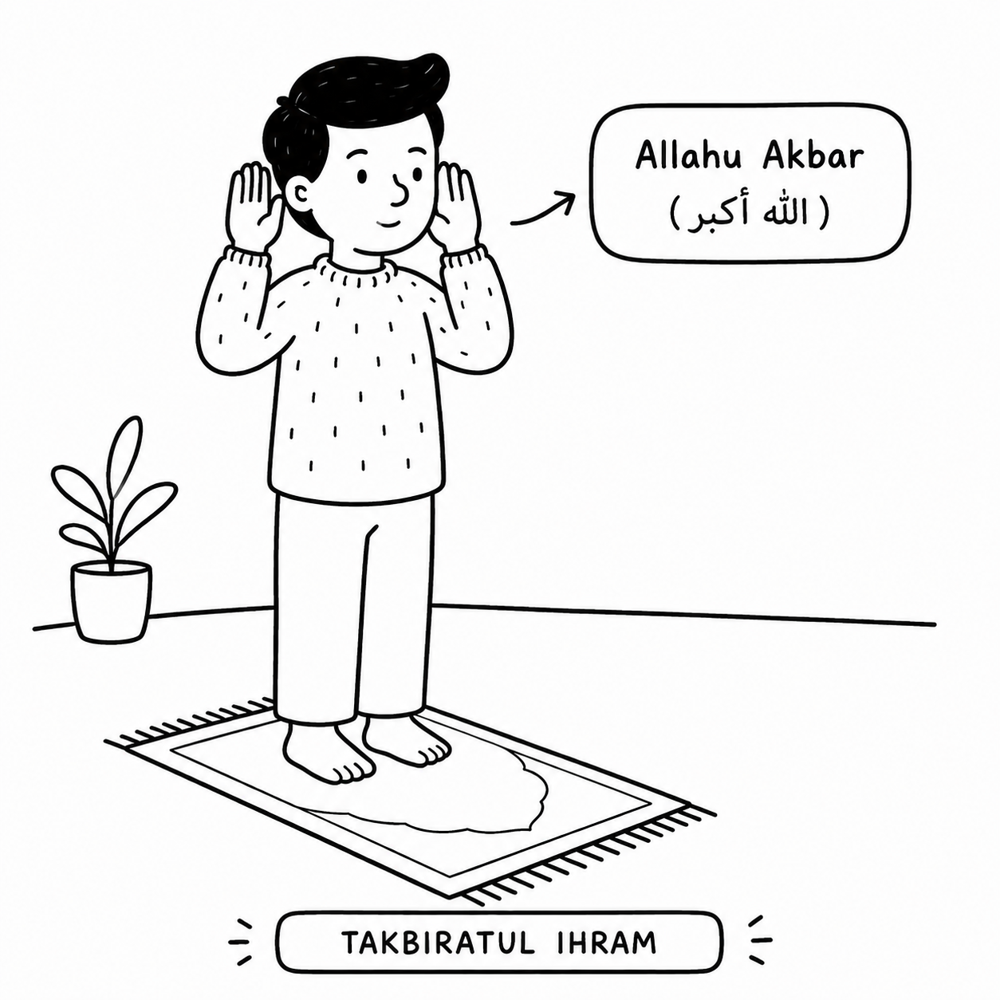
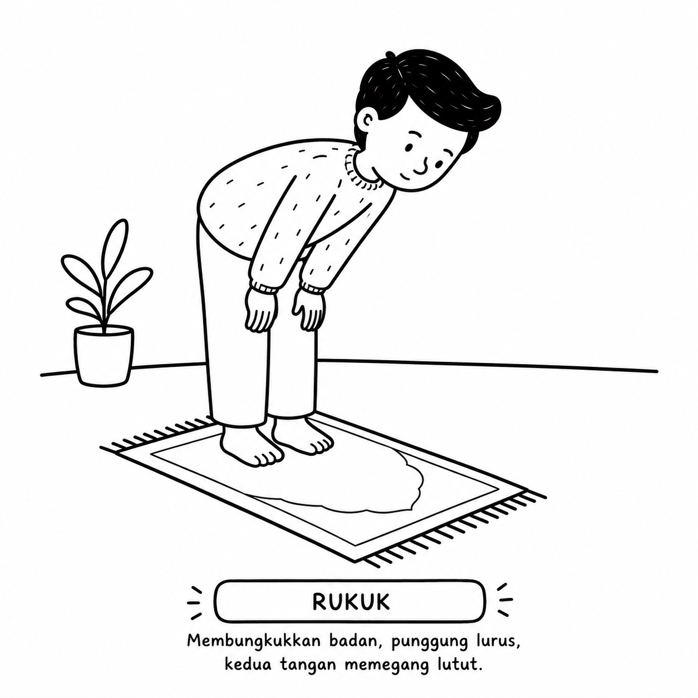
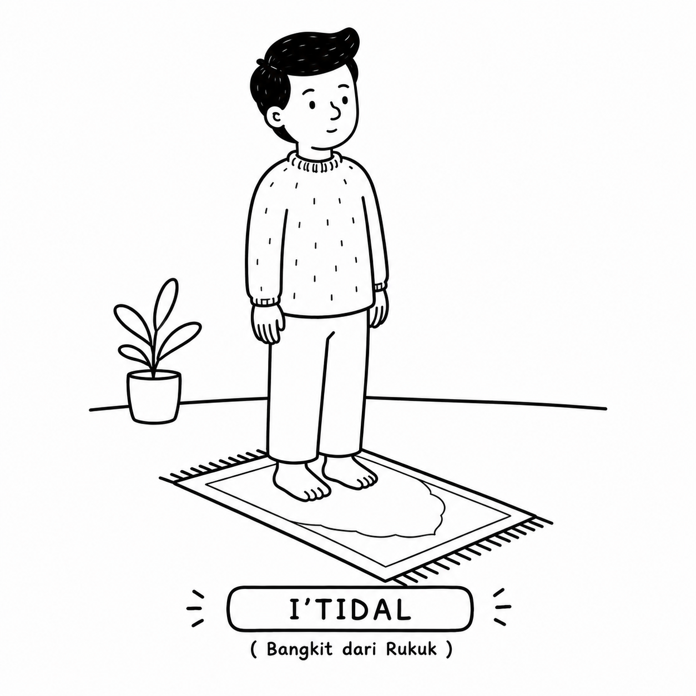
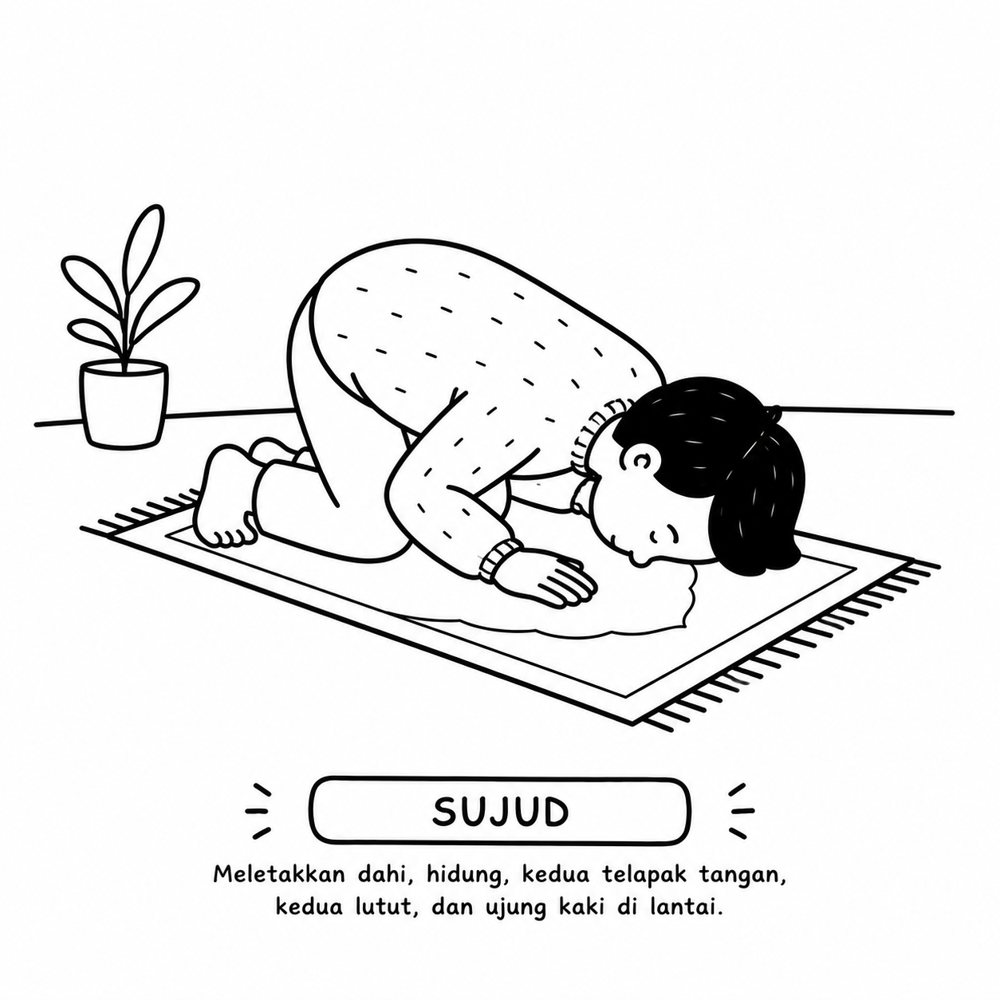
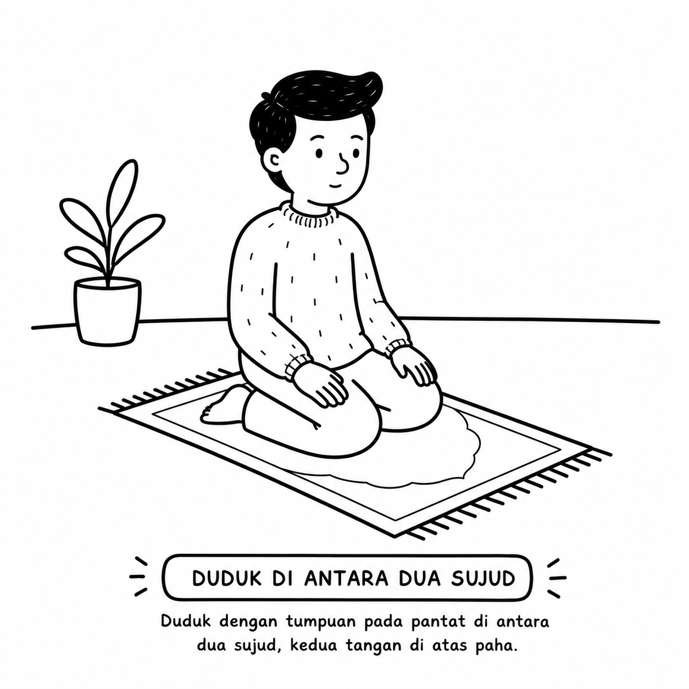
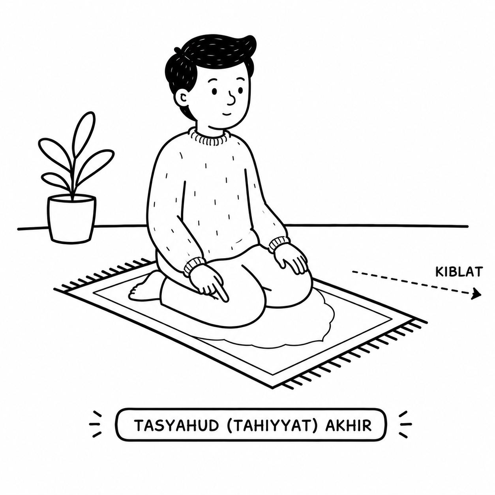
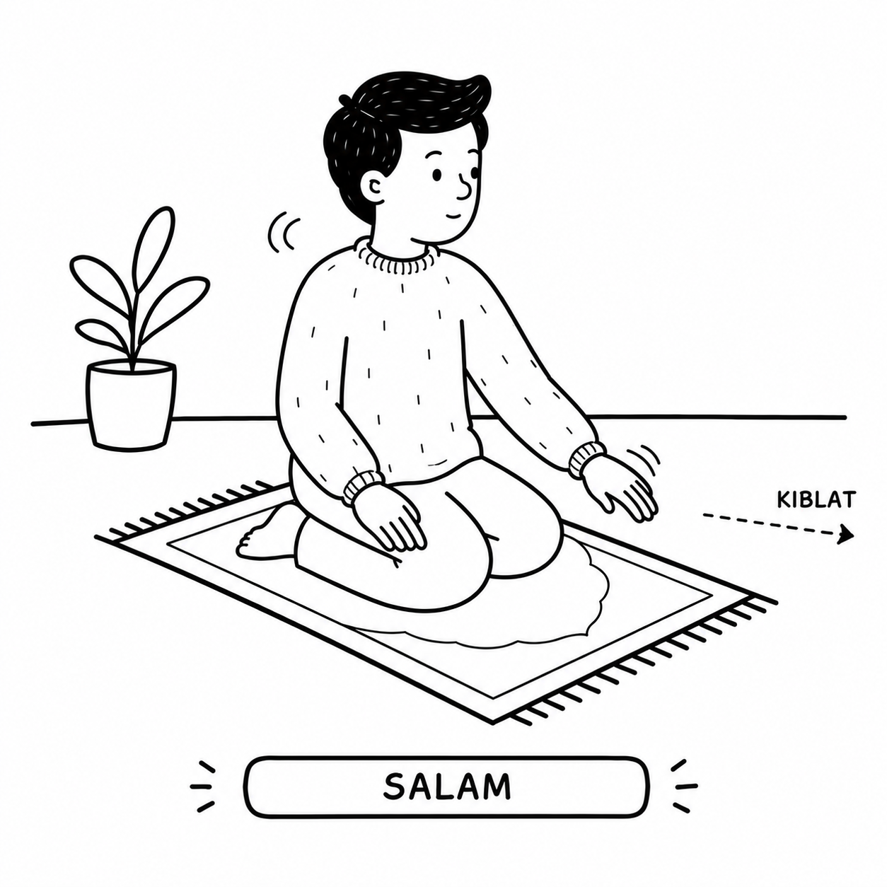

Berdiri tegak menghadap ke arah Ka'bah (Kiblat) bagi yang mampu.
📖 Dalil — QS. Al-Baqarah: 144
"...Maka hadapkanlah wajahmu ke arah Masjidil Haram..."
📖 Dalil — HR. Bukhari no. 6251 & Muslim no. 397
Rasulullah ﷺ bersabda: "Jika kamu hendak shalat, maka sempurnakanlah wudhu, kemudian menghadaplah ke kiblat, lalu bertakbirlah..."
Keadaan
B Niat
Niat adalah amalan hati (bertekad untuk melaksanakan sholat tertentu, misal: Sholat Zhuhur) dan tidak dilafadzkan (tidak ada dalil shahih yang menyatakan Rasulullah ﷺ melafadzkannya).
📖 Dalil — HR. Bukhari no. 1 & Muslim no. 1907
Rasulullah ﷺ bersabda: "Sesungguhnya setiap amalan itu bergantung pada niatnya..."
2
Takbiratul Ihram

Gerakan
A Mengangkat Kedua Tangan
Mengangkat kedua tangan sejajar dengan pundak atau sejajar dengan daun telinga dengan jari-jari direnggangkan sedikit dan dihadapkan ke kiblat.
📖 Dalil 1 — Sejajar Pundak (HR. Bukhari no. 735 & Muslim no. 390)
Dari Abdullah bin Umar رضي الله عنه: "Aku melihat Rasulullah ﷺ ketika berdiri shalat mengangkat kedua tangannya hingga sejajar dengan kedua pundaknya, hal itu beliau lakukan ketika bertakbir..."
📖 Dalil 2 — Sejajar Daun Telinga (HR. Muslim no. 391)
Dari Malik bin Al-Huwairits رضي الله عنه: "Rasulullah ﷺ ketika bertakbir mengangkat kedua tangannya hingga sejajar dengan bagian atas kedua telinganya."
Bacaan
B Bacaan Takbiratul Ihram
اللهُ أَكْبَرُ
Allāhu Akbar
Allah Maha Besar.
📖 Dalil — HR. Abu Dawud no. 618, At-Tirmidzi no. 3
"Kunci shalat adalah bersuci, pengharamannya (dari hal di luar shalat) adalah takbir, dan penghalalannya adalah salam."
3
Bersedekap & Doa Istiftah
Gerakan
A Meletakkan Tangan di Atas Dada
Meletakkan telapak tangan kanan di atas punggung telapak tangan kiri, pergelangan, atau lengan bawah, lalu diletakkan di atas dada.
📖 Dalil 1 — HR. Bukhari no. 740
Dari Sahl bin Sa'ad رضي الله عنه: "Orang-orang diperintahkan agar meletakkan tangan kanan di atas lengan kiri mereka dalam shalat."
📖 Dalil 2 — HR. Ibnu Khuzaimah no. 479
Dari Wa'il bin Hujr رضي الله عنه: "Aku shalat bersama Rasulullah ﷺ, beliau meletakkan tangan kanannya di atas tangan kirinya di atas dadanya."
Bacaan
B Doa Istiftah (Iftitah)
Ada beberapa macam doa Istiftah yang diajarkan oleh Rasulullah ﷺ. Anda dapat memilih salah satu:
Allāhumma bā'id bainī wa baina khaṭāyāya kamā bā'adta bainal-masyriqi wal-magrib. Allāhumma naqqinī minal-khaṭāyā kamā yunaqqas̱-s̱aubul-abyaḍu minad-danas. Allāhumma-gsil khaṭāyāya bil-mā'i wa s̱-s̱alji wal-barad.
Ya Allah, jauhkanlah antara aku dan kesalahan-kesalahanku, sebagaimana Engkau menjauhkan antara timur dan barat. Ya Allah, bersihkanlah aku dari kesalahan-kesalahanku sebagaimana baju putih dibersihkan dari kotoran. Ya Allah, cucilah kesalahan-kesalahanku dengan air, salju dan es/air embun.
📖 Dalil — HR. Bukhari no. 744 & Muslim no. 598
Sering dibaca saat sholat malam, namun sah untuk sholat fardhu.
Wajjahtu wajhiya lilladzī faṭaras-samāwāti wal-arḍa ḥanīfaw-wa mā ana minal-musyrikīn. Inna ṣalātī wa nusukī wa maḥyāya wa mamātī lillāhi Rabbil-'ālamīn. Lā syarīka lahū wa bidzālika umirtu wa ana minal-muslimīn...
Aku hadapkan wajahku kepada Allah yang telah menciptakan langit dan bumi dengan penuh kepatuhan, dan aku bukanlah termasuk orang-orang musyrik. Sesungguhnya shalatku, ibadahku, hidupku dan matiku hanya untuk Allah, Rabb semesta alam...
A'ūdzu billāhis-samī'il-'alīmi minasy-syaiṭānir-rajīmi min hamzihī wa naf-khihī wa naf-s̱ih.
Aku berlindung kepada Allah Yang Maha Mendengar lagi Maha Mengetahui dari gangguan setan yang terkutuk, yaitu dari kegilaannya, kesombongannya, dan hembusan syairnya yang sesat.
📖 Dalil Kewajiban — HR. Bukhari no. 756 & Muslim no. 394
Rasulullah ﷺ bersabda: "Tidak sah shalat bagi orang yang tidak membaca Fatihatul Kitab (Surat Al-Fatihah)."
C Mengucapkan "Aamiin"
Setelah selesai membaca Al-Fatihah, disunnahkan membaca "Aamiin" dengan suara keras (jahr) pada sholat jahriyah atau lirih pada sholat sirriyah.
آمِيْن
Āmīn
Kabulkanlah doa kami.
📖 Dalil — HR. Bukhari no. 782 & Muslim no. 410
"Jika imam mengucapkan 'Gairil magḍūbi 'alaihim walad-ḍāllīn', maka ucapkanlah 'Aamiin'. Karena barangsiapa yang ucapan aminnya bersamaan dengan ucapan amin para malaikat, maka dosa-dosanya yang telah lalu akan diampuni."
5
Membaca Surah Al-Qur'an
Bacaan
Disunnahkan membaca satu surat penuh atau beberapa ayat dari Al-Qur'an pada dua rakaat pertama (Sholat Shubuh, Zhuhur, Ashar, Maghrib, Isya).
📖 Dalil — HR. Bukhari no. 759 & Muslim no. 451
Dari Abu Qatadah رضي الله عنه: "Nabi ﷺ membaca Al-Fatihah dan surat lain pada dua rakaat pertama dalam shalat Zhuhur dan Ashar..."
6
Rukuk

Gerakan
A Mengangkat Tangan, Takbir, dan Membungkuk
Mengangkat kedua tangan sejajar pundak/telinga sembari bertakbir ("Allahu Akbar"). Membungkukkan badan hingga punggung lurus mendatar. Kedua telapak tangan memegang lutut dengan jari-jari direnggangkan (seperti mencengkeram). Siku direnggangkan dari lambung dan pandangan lurus ke arah tempat sujud.
📖 Dalil — HR. Bukhari no. 735 & Muslim no. 390
Dari Abdullah bin Umar رضي الله عنه: "...dan beliau mengangkat kedua tangannya ketika bertakbir untuk rukuk..."
📖 Dalil — HR. Bukhari no. 828, Abu Dawud no. 730
Dari Abu Humaid As-Sa'idi رضي الله عنه: "Apabila beliau rukuk, beliau meletakkan kedua tangannya pada lututnya seakan-akan mencengkeramnya, dan beliau meratakan punggungnya serta tidak mendongakkan kepalanya dan tidak pula terlalu menundukkannya."
Bacaan
B Bacaan Rukuk
Paling populer — dibaca 3 kali.
سُبْحَانَ رَبِّيَ الْعَظِيمِ
Subḥāna Rabbiyal-'Aẓīm (3×)
Maha Suci Rabbku Yang Maha Agung.
📖 Dalil — HR. Muslim no. 772, Abu Dawud no. 871
سُبْحَانَ رَبِّيَ الْعَظِيمِ وَبِحَمْدِهِ
Subḥāna Rabbiyal-'Aẓīmi wa biḥamdih (3×)
Maha Suci Rabbku Yang Maha Agung dan dengan memuji-Nya.
Subḥānakallāhumma Rabbanā wa biḥamdika Allāhummagfir lī.
Maha Suci Engkau ya Allah, Rabb kami, dan dengan memuji-Mu. Ya Allah ampunilah aku.
📖 Dalil — HR. Bukhari no. 794 & Muslim no. 484
سُبُّوحٌ قُدُّوسٌ رَبُّ الْمَلَائِكَةِ وَالرُّوحِ
Subbūḥun Quddūsun Rabbul-malā'ikati war-rūḥ.
Maha Suci (dari segala kekurangan), Maha Qudus, Rabb para malaikat dan Jibril.
📖 Dalil — HR. Muslim no. 487
7
I'tidal (Bangkit dari Rukuk)

Gerakan
A Bangkit dan Mengangkat Tangan
Bangkit dari rukuk hingga tubuh berdiri tegak lurus (Thuma'ninah), sambil mengangkat kedua tangan sejajar pundak/telinga saat mengucapkan tasmi'. Setelah tegak berdiri, tangan diluruskan di samping badan.
📖 Dalil — HR. Bukhari no. 735 & Muslim no. 390
Dari Abdullah bin Umar رضي الله عنه: "Aku melihat Nabi ﷺ mengangkat kedua tangannya setinggi pundak ketika memulai shalat, ketika bertakbir untuk rukuk, dan ketika mengucapkan 'Sami'allahu liman hamidah'..."
Allāhumma Rabbanā lakal-ḥamdu mil'as-samāwāti wa mil'al-arḍi wa mil'a mā bainahumā wa mil'a mā syi'ta min syai'in ba'du.
Ya Allah, Rabb kami, bagi-Mu segala puji sebanyak langit dan bumi, sebanyak apa yang ada di antara keduanya, dan sebanyak apa pun yang Engkau kehendaki selain itu.
📖 Dalil — HR. Muslim no. 476
8
Sujud

Gerakan
A Turun ke Sujud — 7 Anggota Badan
Turun bersujud dan memastikan 7 anggota sujud menempel pada lantai: (1) Dahi sekaligus hidung, (2-3) kedua telapak tangan, (4-5) kedua lutut, (6-7) kedua ujung kaki (jari kaki ditekuk menghadap kiblat dan tumit dirapatkan).
Siku diangkat dari lantai dan direnggangkan dari lambung (bagi laki-laki).
📖 Dalil — HR. Bukhari no. 812 & Muslim no. 490
Rasulullah ﷺ bersabda: "Aku diperintahkan untuk sujud di atas tujuh tulang (anggota badan): dahi—dan beliau menunjuk dengan tangannya ke hidungnya—, kedua tangan, kedua lutut, dan ujung jari-jari kedua kaki."
Cara turun ke sujud:
📖 Cara 1 — Lutut dahulu (HR. Abu Dawud no. 838, An-Nasa'i no. 1089)
Dari Wa'il bin Hujr رضي الله عنه: "Aku melihat Rasulullah ﷺ jika sujud meletakkan kedua lututnya sebelum kedua tangannya..."
📖 Cara 2 — Tangan dahulu (HR. Abu Dawud no. 840, An-Nasa'i no. 1091)
Dari Abu Hurairah رضي الله عنه: "Jika salah seorang dari kalian sujud, janganlah ia menderum sebagaimana menderumnya unta, dan hendaklah ia meletakkan kedua tangannya sebelum kedua lututnya."
Bacaan
B Bacaan Sujud
Paling populer — dibaca 3 kali.
سُبْحَانَ رَبِّيَ الْأَعْلَى
Subḥāna Rabbiyal-A'lā (3×)
Maha Suci Rabbku Yang Maha Tinggi.
📖 Dalil — HR. Muslim no. 772, Abu Dawud no. 871
سُبْحَانَ رَبِّيَ الْأَعْلَى وَبِحَمْدِهِ
Subḥāna Rabbiyal-A'lā wa biḥamdih (3×)
Maha Suci Rabbku Yang Maha Tinggi dan dengan memuji-Nya.
Allāhummagfir lī dzambī kullahū: diqqahū wa jillahū, wa awwalahū wa ākhirahū, wa 'alāniyatahū wa sirrah.
Ya Allah, ampunilah seluruh dosaku: yang kecil maupun yang besar, yang awal maupun yang akhir, yang terang-terangan maupun yang tersembunyi.
📖 Dalil — HR. Muslim no. 483
9
Duduk di Antara Dua Sujud

Gerakan
A Duduk Iftirash
Bangkit dari sujud seraya mengucapkan takbir ("Allahu Akbar") tanpa mengangkat tangan. Duduk di atas telapak kaki kiri yang dihamparkan (iftirash), menegakkan telapak kaki kanan dengan jari-jari kakinya ditekuk menghadap kiblat. Kedua telapak tangan diletakkan di atas paha/lutut.
📖 Dalil — HR. Muslim no. 498
Dari Aisyah رضي الله عنها: "Dan beliau menghamparkan kaki kirinya dan menegakkan kaki kanannya..."
Gerakan, syarat 7 anggota sujud, serta bacaannya sama persis seperti pada sujud yang pertama (Langkah 8).
📖 Catatan
Silakan lihat bacaan sujud pada Langkah 8 untuk variasi doa yang bisa dibaca secara bergantian.
11
Duduk Istirahat & Berdiri
Gerakan
A Duduk Istirahat
Sebelum langsung bangkit berdiri tegak untuk rakaat berikutnya, disunnahkan untuk duduk istirahat sejenak (seperti duduk iftirash) tanpa membaca doa apa pun, kemudian bertumpu dengan kedua tangan pada lantai untuk bangkit berdiri.
📖 Dalil — HR. Bukhari no. 823
Dari Malik bin Al-Huwairits Al-Laitsi رضي الله عنه: "Bahwasanya ia melihat Nabi ﷺ shalat, apabila beliau berada pada rakaat ganjil dari shalatnya, beliau tidak langsung bangkit berdiri hingga beliau duduk tegak terlebih dahulu (duduk istirahat)."
📖 Dalil — HR. Bukhari no. 824
"Kemudian beliau bertumpu pada bumi (lantai) dengan kedua tangannya ketika bangkit berdiri."
12
Tasyahud (Tahiyyat) Awal
Gerakan
A Duduk Iftirash & Isyarat Jari
Duduk dengan posisi Iftirash. Tangan kiri diletakkan di atas lutut kiri dengan jari terbuka. Tangan kanan diletakkan di atas paha kanan dengan menggenggam jari-jarinya kecuali jari telunjuk yang diacungkan (menunjuk ke kiblat) dan ibu jari yang didekatkan ke jari tengah. Pandangan mata tertuju ke jari telunjuk tersebut.
📖 Dalil — HR. Muslim no. 580
Dari Abdullah bin Umar رضي الله عنه: "Nabi ﷺ jika duduk dalam shalat, beliau meletakkan tangan kanannya di atas lutut kanannya, beliau menekuk seluruh jarinya dan menunjuk dengan jari telunjuknya..."
Bacaan
B Bacaan Tasyahud Awal
1. Tashahhud (Riwayat Ibnu Mas'ud — Paling Shahih):
At-taḥiyyātu lillāhi, waṣ-ṣalawātu waṭ-ṭayyibāt. As-salāmu 'alaika ayyuhan-nabiyyu wa raḥmatullāhi wa barakātuh. As-salāmu 'alainā wa 'alā 'ibādillāhiṣ-ṣāliḥīn. Asyhadu allā ilāha illallāhu, wa asyhadu anna Muḥammadan 'abduhū wa rasūluh.
Segala penghormatan hanyalah milik Allah, begitu juga segala ibadah dan kebaikan. Semoga kesejahteraan tercurah kepadamu wahai Nabi, begitu pula rahmat Allah dan berkah-Nya. Semoga kesejahteraan tercurah kepada kami dan kepada hamba-hamba Allah yang shalih. Aku bersaksi bahwa tidak ada ilah yang berhak disembah selain Allah, dan aku bersaksi bahwa Muhammad adalah hamba dan utusan-Nya.
📖 Dalil — HR. Bukhari no. 1202 & Muslim no. 402
2. Sholawat Nabi (Disunnahkan sebelum bangkit):
اللَّهُمَّ صَلِّ عَلَى مُحَمَّدٍ
Allāhumma ṣalli 'alā Muḥammad.
Ya Allah, berilah berkah sholawat kepada Muhammad.
13
Tasyahud (Tahiyyat) Akhir

Gerakan
A Duduk Tawarruk
Duduk dengan posisi pantat kiri langsung menyentuh lantai, kaki kiri dikeluarkan di bawah kaki kanan (disilangkan ke arah kanan), dan kaki kanan ditegakkan dengan jari-jari ditekuk menghadap kiblat.
📖 Dalil — HR. Bukhari no. 828
Dari Abu Humaid As-Sa'idi رضي الله عنه: "...dan apabila beliau duduk pada rakaat terakhir, beliau memajukan kaki kirinya dan menegakkan kaki kanannya, lalu beliau duduk di atas tempat duduknya (pantat langsung menyentuh lantai)."
Ya Allah, berilah berkah sholawat kepada Muhammad dan keluarga Muhammad, sebagaimana Engkau telah memberi sholawat kepada Ibrahim dan keluarga Ibrahim. Sesungguhnya Engkau Maha Terpuji lagi Maha Agung. Ya Allah, berkahilah Muhammad dan keluarga Muhammad, sebagaimana Engkau telah memberkahi Ibrahim dan keluarga Ibrahim. Sesungguhnya Engkau Maha Terpuji lagi Maha Agung.
📖 Dalil — HR. Bukhari no. 3370 & Muslim no. 405
3. Doa Perlindungan dari 4 Fitnah (sangat ditekankan):
Allāhumma innī a'ūdzu bika min 'adzābi jahannama, wa min 'adzābil-qabri, wa min fitnatil-maḥyā wal-mamāti, wa min syarri fitnatil-masīḥid-dajjāl.
Ya Allah, sesungguhnya aku berlindung kepada-Mu dari azab Neraka Jahannam, dari azab kubur, dari fitnah kehidupan dan kematian, serta dari keburukan fitnah Al-Masih Ad-Dajjal.
📖 Dalil — HR. Muslim no. 588
14
Salam

Gerakan
A Menoleh ke Kanan dan ke Kiri
Memutar wajah ke arah kanan hingga pipi kanan terlihat dari arah belakang, kemudian memutar wajah ke arah kiri hingga pipi kiri terlihat dari arah belakang.
📖 Dalil — HR. Abu Dawud no. 996, At-Tirmidzi no. 295
Dari Abdullah bin Mas'ud رضي الله عنه: "Bahwasanya Nabi ﷺ mengucapkan salam ke arah kanan dan kirinya, (hingga) terlihat putih pipi kanannya dan (hingga) terlihat putih pipi kirinya."
Bacaan
B Bacaan Salam
Ke Kanan & Ke Kiri:
السَّلَامُ عَلَيْكُمْ وَرَحْمَةُ اللَّهِ
As-salāmu 'alaikum wa raḥmatullāh.
Semoga keselamatan dan rahmat Allah tercurahkan kepadamu.
Sholat tidak akan sah jika tidak disertai dengan Thuma'ninah. Thuma'ninah artinya adalah diam/tenang sejenak di setiap gerakan sholat (Rukuk, I'tidal, Sujud, Duduk di antara dua sujud) minimal selama durasi membaca dzikir/bacaan wajib di gerakan tersebut.
Dalil — HR. Bukhari no. 757 & Muslim no. 397:
Nabi ﷺ bersabda kepada orang yang shalatnya terburu-buru: "Lalu rukuklah hingga kamu thuma'ninah dalam rukukmu, kemudian bangkitlah hingga kamu berdiri tegak, kemudian sujudlah hingga kamu thuma'ninah dalam sujudmu, kemudian bangkitlah hingga kamu thuma'ninah dalam dudukmu, lalu lakukanlah hal itu pada seluruh shalatmu."